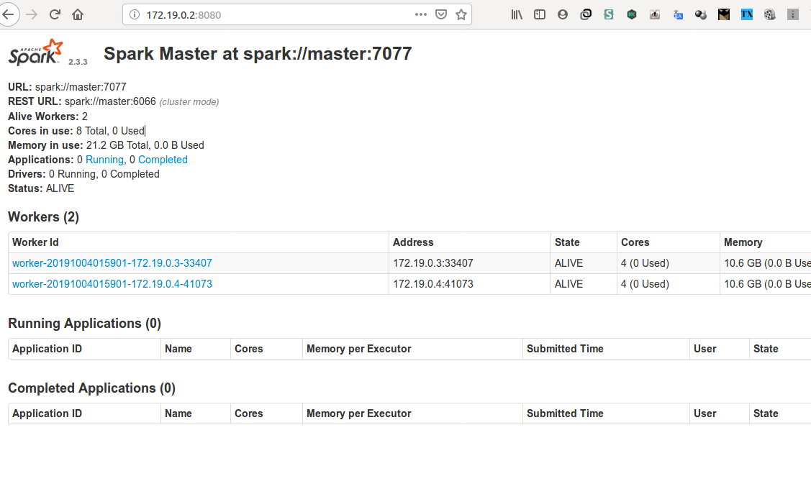
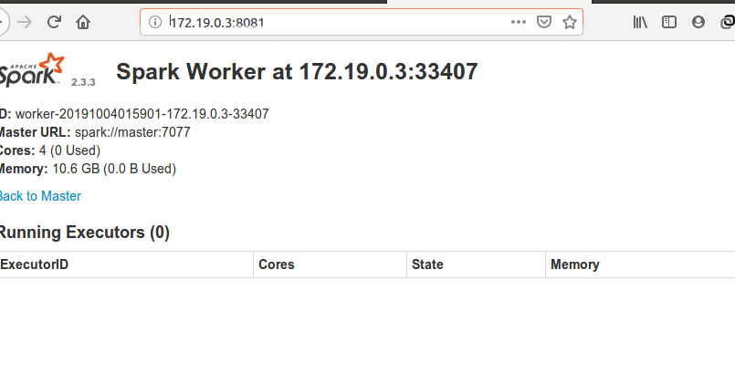
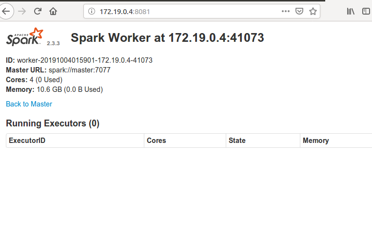
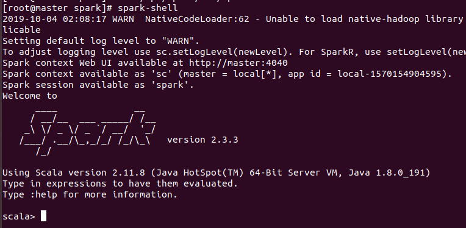
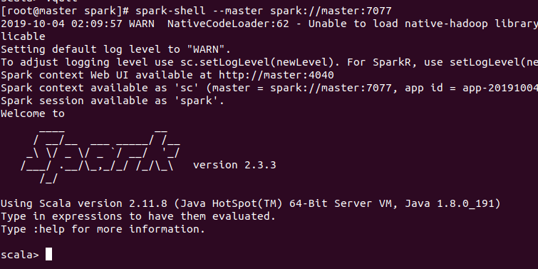

环境
安装了Hadoop HA的环境
安装了Hive
Spark 版本:2.3.3
安装
1. 解压安装包
1 | tar -zxf spark-2.3.3-bin-hadoop2.7.tgz -C /opt/ |
2. 添加可执行目录bin和sbin到环境变量PATH
要放在hadoop 的 前面，因为start-all.sh命令hadoop sbin目录也有，放在前面会优先使用spark的
1 | 如 |
3. 修改spark-env.sh
1 | mv conf/spark-env.sh.template conf/spark-env.sh |
4. 修改slaves文件
1 | mv conf/slaves.template conf/slaves |
5. 复制spark目录到其他节点(slave1,slave2)
6. 启动
执行/opt/spark/sbin/start-all.sh
测试
1. 查看web界面



2. spark-shell
直接输入spark-shell

这里的 master=local[],应该是默认本地模式
指定master来启动spark-shell

这时在web界面也有对应的Running Application了
3. PySpark 测试
1 | 默认使用的是python2 |
配置
1. 和hadoop 的 hdfs 结合
结合后读取文件时默认从hdfs上读取
将hadoop的配置文件core-site.xml 和hdfs-site.xml复制到spark安装目录的conf目录下
1 | 复制完后用spark-shell 执行时会从hdfs上读取/in.txt文件 |
2. 和hive结合
spark-sql 的表的写入读取 那些，设置成已经安装了的hive
不结合hive的话,spark其实内置了一个数据库，没有指定的话，就会使用那个(数据写入在spark安装目录下的文件夹里)
- 没结合hive前
创建一个dataframe ,保存成表测试
1 | //定义一个case类 |
设置hive连接
将hive的配置文件 hive-site.xml 复制到 spark安装目录下的conf文件夹
拷贝mysql驱动到spark安装目录的jars文件夹下
再运行上面的测试代码,先在hive里创建test数据库
1 | create database test; |
df.write.saveAsTable(“test.apps”)后在hive里查看是不是有apps表
1 | hive> show tables; |
3. PySpark使用python3
默认安装的Python 为 2.7,现在修改为3.7版本
- 使用源码编译的方式安装 Python3
- 安装python3到/opt/python3文件夹
- 切换Spark的pyspark为python3版本
- 在master上编译,然后将编译好的/opt/python3 直接发送到其他节点
使用yum安装依赖包 编译python用
1
2
3
4
5
6yum install gcc
yum install zlib-static
yum install libffi-devel -y
yum install readline-devel(不装这个方向键用不了)
yum install -y openssl-devel
libffi-devel解压源码包
1
2
3
4
5
6
7
8
9tar -xvf Python-3.7.3.tar.xz
cd 进入解压出来的文件夹, 下面命令设置安装路径
./configure --prefix=/opt/python3
//docker里的centos 镜像没有make命令,使用yum install make命令安装
编译
make
编译安装
make install修改./bashrc 添加别名来在命令行里快速启动
1
2alias python3='/opt/python3/bin/python3'
alias pip='/opt/python3/bin/pip3'设置pyspark使用的python3为python3
1
export PYSPARK_PYTHON=/opt/python3/bin/python3
复制编译好的python3到其他两个节点
复制环境变量.bashrc到其他两个节点
启动pyspark测试
1
2
3
4
5
6
7
8
9
10
11
12
13
14
15
16
17成功是python3
Python 3.7.3 (default, Oct 4 2019, 04:22:20)
[GCC 4.8.5 20150623 (Red Hat 4.8.5-39)] on linux
Type "help", "copyright", "credits" or "license" for more information.
2019-10-04 04:38:07 WARN NativeCodeLoader:62 - Unable to load native-hadoop library for your platform... using builtin-java classes where applicable
Setting default log level to "WARN".
To adjust logging level use sc.setLogLevel(newLevel). For SparkR, use setLogLevel(newLevel).
Welcome to
____ __
/ __/__ ___ _____/ /__
_\ \/ _ \/ _ `/ __/ '_/
/__ / .__/\_,_/_/ /_/\_\ version 2.3.3
/_/
Using Python version 3.7.3 (default, Oct 4 2019 04:22:20)
SparkSession available as 'spark'.
>>>
Spark 学习:
RDD学习
Spark-SQL DataSet / DataFrame 学习
Spark MLlib